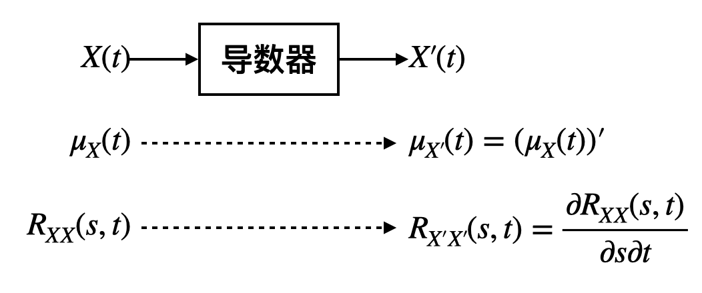

[随机过程]4·二阶矩过程、平稳过程和随机分析
本章讨论的随机过程都是复随机过程。
\[ \newcommand{\coloneqq}{\mathrel{\mathrel{\vcenter{:}}=}} \newcommand{\limsq}{\mathop{\text{l.i.m }}} \]
二阶矩过程
定义：设有随机过程 \(\{X(t),t\in T\}\)，若对 \(\forall t\in T\)，\(X(t)\) 的均值和方差存在，则称随机过程 \(\{X(t),t\in T\}\) 为二阶矩过程。
预处理：令 \(\tilde X(t)=X(t)-\mu_X(t)\)，则 \(\mathbb E[\tilde X(T)]=0\)，并且 \(\tilde X(t)\) 二阶矩也存在，因此之后讨论的二阶矩过程一般都假定均值函数为零。
二阶矩过程相关函数的性质：
共轭对称性： \[ R_{XX}(t_1,t_2)=\overline{R_{XX}(t_2,t_1)},\quad \forall\ t_1,t_2\in T \]
非负定性（半正定性）： \[ \sum_{k=1}^n\sum_{m=1}^n R_{XX}(t_k,t_m)\lambda_k\overline{\lambda_m}\geq 0 \]
根据上述两条性质可知，二阶矩过程的相关矩阵是一个半正定的 Hermite 矩阵。
平稳过程
严平稳过程
定义：若随机过程 \(\{X(t),t\in T\}\) 满足：对于 \(\forall n\in\mathbb N\)，任选 \(t_1<\cdots<t_n\)，其中 \(t_i\in T\)，以及任意的 \(\tau\)，\(x_1,\ldots,x_n\in \mathbb R\)，都有： \[ F_X(x_1,\ldots,x_n;t_1,\ldots t_n)=F_X(x_1,\ldots,x_n;t_1+\tau,\ldots,t_n+\tau) \] 其中 \(F_X (\cdot)\) 是 \(n\) 维分布函数，则称此随机过程为严平稳随机过程。
即严平稳过程的任意有限维分布都不随时间推移变化。但注意其数字特征（均值、方差等）并不一定存在。
注 1：严平稳随机过程的一维分布函数与时间 \(t\) 无关。因此，如果严平稳随机过程的均值函数存在的话，则是一常数。
注 2：严平稳随机过程的任意二维分布函数只与时间差有关。因此，如果严平稳随机过程的二阶矩存在的话，则自相关函数只与时间差有关。
注 3：若上述的定义中的条件不是对于任意的 \(n\) 满足，而只是对于某个 \(k\) 满足时，即对于任意的 \(t_1<\cdots<t_k,\,t_i\in T\)，任意的 \(\tau\)，有： \[ F_X(x_1,\ldots,x_k;t_1,\ldots t_k)=F_X(x_1,\ldots,x_k;t_1+\tau,\ldots,t_k+\tau) \] 而当 \(n>k\) 时上式不成立，则称它为 \(k\) 级平稳的随机过程。如果过程为 \(k\) 级平稳的，那么当 \(n<k\) 时，上面的等式成立。
宽平稳过程
定义：设随机过程 \(\{X(t),t\in T\}\) 是二阶矩过程，若其均值函数为常数，自相关函数只是时间差 \(\tau=t_2-t_1\) 的函数，则称此随机过程为宽平稳随机过程。
注 1：宽平稳随机过程是二阶矩过程，但不一定是严平稳随机过程。
注 2：对于严平稳随机过程，只有它二阶矩存在时，它才是宽平稳过程。
注 3：对于正态随机过程来说，严平稳就是宽平稳。
注 4：以下讨论平稳过程指的是宽平稳随机过程。
宽平稳随机过程的性质：
- \(R_{XX}(\tau)=\overline{R_{XX}(-\tau)}\).
- \(R_{XX}(0)\geq |\mu_{\small X}|^2\).
- \(|R_{XX}(\tau)|\leq R_{XX}(0),\,|C_{XX}(\tau)|\leq C_{XX}(0)\).
- 非负定性：\(\sum_{k=1}^n\sum_{m=1}^n R_{XX}(t_k-t_m)\lambda_k\overline{\lambda_m}\geq 0\).
正交增量过程
定义：设随机过程 \(\{X(t),t\in T\}\) 是二阶矩过程，若 \(t_1<t_2\leq t_3<t_4\)，有： \[ \mathbb E\left[(X(t_2)-X(t_1))\overline{(X(t_4)-X(t_3)}\right]=0 \] 则称该过程为正交增量过程。
独立增量过程与正交增量过程的关系：均值为常数、二阶矩存在的独立增量过程一定是正交增量过程。
补充（独立增量过程的协方差函数与方差函数的关系）：设 \(\{X(t);t\geq 0\}\) 是一独立增量过程，且 \(X(0)=0\)，二阶矩存在，则可以证明： \[C_X(s,t)=D_X(\min\{s,t\}),\quad R_X(s,t)=C_X(s,t)+\mu_X(s)\mu_X(t)\]
从线性空间的角度看待二阶矩存在的随机变量
可以验证，所有二阶矩存在的随机变量构成了一个线性空间； \[V=\{X\mid\mathbb E\left[|X|^2\right]<\infty\}\] 定义随机变量之间的内积为： \[\langle X,Y\rangle\coloneqq\mathbb E\left[X\overline Y\right]\] 可以验证这种定义方式符合内积的要求，因此构成了一个内积空间。在内积空间中，有定义：
- 范数：\(\Vert X\Vert=\langle X,X\rangle^{1/2}\)
- 距离：\(\Vert X-Y\Vert\)
- 正交：\(\langle X,Y\rangle=0\)
从这个角度就能理解正交增量过程中“正交”的含义了。
随机分析
我们在数学分析中研究过数列的极限、函数的连续性、导数和积分，那么推广到随机过程，也可以研究其极限、连续性、导数和积分，是谓随机分析。
均方极限
定义：设随机序列 \(\{X_n;n=1,2,\ldots\}\) 及随机变量 \(X\) 均存在二阶矩，即 \(\mathbb E[|X_n|^2]<\infty,\,\mathbb E[|X|^2]<\infty\)，若： \[ \lim_{n\to\infty}\mathbb E[|X_n-X|^2]=0 \] 则称随机序列 \(\{X_n\}\) 均方收敛于 \(X\)，或序列 \(\{X_n\}\) 的均方极限为 \(X\)，记作： \[ \limsq_{n\to\infty}X_n=X \] 性质：设 \(\limsq\limits_{n\to\infty}X_n=X,\,\limsq\limits_{n\to\infty}Y_n=Y\)，有：
- \(\lim\limits_{n\to\infty}\mathbb E[X_n]=\mathbb EX=\mathbb E\left[\limsq\limits_{n\to\infty}X_n\right]\).
- \(\lim\limits_{n\to\infty}\mathbb E[|X_n|^2]=\mathbb E[|X|^2]=\mathbb E\left[\left|\limsq\limits_{n\to\infty}X_n\right|^2\right]\).
- \(\limsq\limits_{n\to\infty}(aX_n+bY_n)=aX+bY\).
- \(\lim\limits_{n\to\infty,m\to\infty}\mathbb E[X_n\overline{Y_m}]=\mathbb E[X\overline Y]\).
- 均方极限唯一。
- 柯西准则：随机序列 \(\{X_n;n=1,2,\ldots\}\) 均方收敛的充要条件为 \(\lim\limits_{n\to\infty,m\to\infty}\mathbb E[|X_n-X_m|^2]=0\).
- 列维准则：随机序列 \(\{X_n;n=1,2,\ldots\}\) 均方收敛的充要条件为 \(\lim\limits_{n\to\infty,m\to\infty}\mathbb E[X_n\overline{X_m}]=c\)，其中 \(c\) 为复常数。
- 设 \(f(u)\) 是一确定性函数，且满足 Lipschitz 条件，又假设 \(f(X_n),\,f(X)\) 的二阶矩都存在，则 \(\limsq\limits_{n\to\infty}f(X_n)=f(X)\).
- 对任意有限 \(t\)，有 \(\limsq\limits_{n\to\infty}\exp(jtX_n)=\exp(jtX)\).
均方连续
定义：设二阶矩过程 \(\{X(t);t\in T\}\)，\(t_0\in T\)，若： \[ \lim_{h\to0}\mathbb E[|X(t_0+h)-X(t_0)|^2]=0 \] 即 \(\limsq\limits_{h\to0}X(t_0+h)=X(t_0)\)，则称 \(X(t)\) 在 \(t=t_0\) 点均方连续。若对任意 \(t\in T\)，\(X(t)\) 都均方连续，则称过程均方连续。
判定准则：设二阶矩过程 \(\{X(t);t\in T\}\)，自相关函数为 \(R(s,t)\)，则过程在 \(t=t_0\in T\) 处均方连续的充要条件是 \(R(s,t)\) 在点 \((t_0,t_0)\in T\times T\) 处连续。另外，如果 \(R(s,t)\) 在对角线 \(s=t\in T\) 上连续，则在整个 \(T\times T\) 上连续。
定理：若二阶矩过程 \(\{X(t);t\in T\}\) 均方连续，则对于任意 \(t\in T\)，有： \[ \lim_{h\to0}\mathbb E[X(t+h)]=\mathbb E[X(t)] \] 即均值函数连续（注意均值函数是一个确定性函数，“连续”就是普通的连续）。
定理：设 \(\{X(t);t\in(-\infty,+\infty)\}\) 是宽平稳过程，则以下各条件是等价的：
- \(\{X(t)\}\) 均方连续；
- \(\{X(t)\}\) 在点 \(t=0\) 处连续；
- 自相关函数 \(R_{\small XX}(\tau)\) 在 \(\tau\in(-\infty,+\infty)\) 上连续；
- 自相关函数 \(R_{\small XX}(\tau)\) 在点 \(\tau=0\) 处连续。
其中第四点验证起来最方便。
均方导数
定义：设有随机过程 \(\{X(t);t\in T\},\,\{Y(t);t\in T\}\)，若： \[ \limsq_{h\to0}\frac{X(t_0+h)-X(t_0)}{h}=Y(t_0) \] 其中 \(t_0,t_0+h\in T\)，则称随机过程 \(\{X(t);t\in T\}\) 在 \(t=t_0\) 处均方可导，并称 \(Y(t_0)\) 为过程在 \(t=t_0\) 处的均方导数，记作： \[ X'(t_0)\coloneqq Y(t_0) \] 若对于任意 \(t\in T\)，\(X(t)\) 都均方可导，且： \[ \limsq_{h\to0}\frac{X(t+h)-X(t)}{h}=Y(t) \] 则称 \(Y(t)=X'(t)=\dfrac{\mathrm dX(t)}{\mathrm dt}\) 为随机过程 \(X(t)\) 的均方导数。
不要试图“求出”均方导数，一般是无法求出的（除了高斯过程），但可以确定其均值函数和相关函数。

判定准则：设二阶矩过程 \(\{X(t);t\in T\}\)，自相关函数为 \(R(s,t)\)，则 \(X(t)\) 在点 \(t=t_0\in T\) 处均方可导的充要条件为： \[ \frac{\partial^2 R(s,t)}{\partial t\partial s} \] 在点 \((t_0,t_0)\) 附近存在且在点 \((t_0,t_0)\) 处连续。
导数过程的均值函数： \[ \mathbb E[X'(t)]=\frac{\mathrm d\mathbb E[X(t)]}{\mathrm dt} \] 导数过程的相关函数： \[ R_{X'}(s,t)=\mathbb E[X'(s)\overline{X'(t)}]=\frac{\partial^2 R(s,t)}{\partial t\partial s} \] 均方导数的性质：
设 \(X(t),\,Y(t)\) 为两个均方可导的随机过程，\(a,b\in\mathbb C\)，则 \(aX(t)+bY(t)\) 也均方可导，且： \[ \dfrac{\mathrm d}{\mathrm dt}[aX(t)+bY(t)]=a\dfrac{\mathrm dX(t)}{\mathrm dt}+b\dfrac{\mathrm dY(t)}{\mathrm dt} \]
设 \(X(t)\) 为均方可导的随机过程，\(f(t)\) 为一确定性函数，则 \(f(t)X(t)\) 也是均方可导的随机过程，且有： \[ \frac{\mathrm d}{\mathrm dt}[f(t)X(t)]=\frac{\mathrm df(t)}{\mathrm dt}X(t)+f(t)\frac{\mathrm dX(t)}{\mathrm dt} \]
平稳过程的均方导数：若 \(\{X(t);t\in T\}\) 为平稳过程，即 \(R_{\small XX}(s,t)=R_{\small XX}(\tau),\,\tau=t-s\)，若 \(R''_{\small XX}(\tau)\) 存在，且在 \(\tau=0\) 处连续，则 \(\{X(t);t\in T\}\) 均方可导，且其均方导数的相关函数为： \[ R_{X'}(s,t)=\mathbb E[X'(s)\overline{X'(t)}]=-R_{\small XX}''(\tau) \] 均值函数为： \[ \mathbb E[X'(t)]=\frac{\mathrm d\mathbb E[X(t)]}{\mathrm dt}=0 \]
均方积分
定义：设 \(\{X(t);t\in [a,b]\}\) 为二阶矩过程，\(h(t,\tau)\) 是定义在 \([a,b]\) 上的以 \(\tau\) 为参数的确定性函数。对 \([a,b]\) 进行任意 \(n\) 划分 \(a=t_0<t_1<\cdots<t_n=b\)，记 \(\Delta t_i=t_i-t_{i-1},\,\hat t_i\in[t_{i-1},t_i],\,\lambda=\max_i\{\Delta t_i\}\)，作和式： \[ S_n(\tau)=\sum_{i=1}^nh(\hat t_i,\tau)X(\hat t_i)\Delta t_i \] 若存在随机变量 \(Y(\tau)\)，对任意的划分和任意的 \(\hat t_i\)，都有： \[ \limsq_{\lambda\to0,\,n\to\infty}S_n(\tau)=Y(\tau) \] 则称 \(S_n(\tau)\) 均方收敛于 \(Y(\tau)\)，并称 \(h(t,\tau)X(t)\) 在 \([a,b]\) 上可积，记 \(S_n(\tau)\) 的均方极限为 \(\int_a^bh(t,\tau)X(t)\mathrm dt\)，即： \[ Y(\tau)=\limsq_{\lambda\to0,\,n\to\infty} S_n(\tau)=\int_a^bh(t,\tau)X(t)\mathrm dt \] 并称为 \(h(\tau,t)X(t)\) 在 \([a,b]\) 上的均方积分。
不要试图“求出”均方积分，一般是无法求出的（除了高斯过程），但可以确定其均值函数和相关函数。
判定准则：\(h(\tau,t)X(t)\) 在 \([a,b]\) 上均方可积的充要条件为： \[ \int_a^b\int_a^bh(t,\tau)\overline{h(u,\tau)}R_{\small XX}(t,u)\mathrm dt\mathrm du \] 存在。
积分过程的均值函数： \[ \mu_Y(\tau)=\mathbb E[Y(\tau)]=\mathbb E\left[\int_a^bh(t,\tau)X(t)\mathrm dt\right]=\int_a^b\mathbb E\left[h(t,\tau)X(t)\right]\mathrm dt=\int_a^bh(t,\tau)\mu_X(t)\mathrm dt \] 积分过程的相关函数： \[ R_{\small YY}(\tau_1,\tau_2)=\mathbb E[Y(\tau_1)\overline{Y(\tau_2)}] =\mathbb E\left[\int_a^b\int_a^bh(t,\tau_1)\overline{h(u,\tau_2)}Y(t)\overline{Y(u)}\mathrm dt\mathrm du\right] =\int_a^b\int_a^bh(t,\tau_1)\overline{h(u,\tau_2)}R_{\small XX}(t,u)\mathrm dt\mathrm du \]
计算时均值和积分可以交换。
均方积分的性质：
设 \(X(t)\) 在 \([a,b]\) 上均方连续，则对于任意 \(t\in T\)，有： \[ \mathbb E\left[\int_a^tX(u)\mathrm du\;\overline{\int_a^tX(v)\mathrm dv}\right]=\mathbb E\left[\left|\int_a^tX(u)\mathrm du\right|^2\right]\leq(t-a)\int_a^t\mathbb E[X(u)\overline{X(u)}]\mathrm du \]
设 \(X(t)\) 在 \([a,b]\) 上均方连续，则有： \[ \left(\mathbb E\left[\left|\int_a^bX(u)\mathrm du\right|^2\right]\right)^{\frac{1}{2}}\leq\int_a^b\mathbb E[|X(u)|^2]^{\frac{1}{2}}\mathrm du \]
从上文定义的内积空间的角度，上述两条性质可以写作： \[\begin{gather}\left\Vert\int_a^tX(u)\mathrm du\right\Vert^2\leq (t-a)\int_a^t\Vert X(u)\Vert^2\mathrm du\\\left\Vert\int_a^bX(u)\mathrm du\right\Vert\leq\int_a^b\Vert X(u)\Vert\mathrm du\end{gather}\]
设 \(X(t),Y(t)\) 在 \([a,c]\) 上均方可积，\(\alpha,\beta\) 为复常数，则： \[ \int_a^c[\alpha X(t)+\beta Y(t)]\mathrm dt=\alpha\int_a^cX(t)\mathrm dt+\beta\int_a^cY(t)\mathrm dt \] 若 \(a\leq b\leq c\)，则： \[ \int_a^c X(t)\mathrm dt=\int_a^bX(t)\mathrm dt+\int_b^cX(t)\mathrm dt \]
设 \(X(t)\) 在 \([a,b]\) 上均方连续，记 \[ Y(t)=\int_a^tX(u)\mathrm du \] 则 \(Y(t)\) 在 \([a,b]\) 上均方连续，均方可导，且 \(Y'(t)=X(t)\).
若 \(X(t)\) 均方可导，且 \(X'(t)\) 均方连续，则有： \[ X(b)-X(a)=\int_a^bX'(t)\mathrm dt \]
性质 4、5 可直接类比确定性函数的变上限积分求导和牛顿-莱布尼兹公式。
小结
| 随机过程 | 均值函数 | 相关函数 |
|---|---|---|
| \(X(t)\) | \(\mu_X(t)\) | \(R_{\small XX}(s,t)\) |
| \(X'(t)\) | \(\mu_{X'}(t)=(\mu_X(t))'\) | \(R_{\small X'X'}(s,t)={\partial^2 R_{\small XX}(s,t)}/{\partial s\partial t}\) |
| \(Y(\tau)=\int_a^bh(t,\tau)X(t)\mathrm dt\) | \(\mu_Y(\tau)=\int_a^bh(t,\tau)\mu_X(t)\mathrm dt\) | \(R_{\small YY}(\tau_1,\tau_2)=\int_a^b\int_a^bh(t,\tau_1)\overline{h(u,\tau_2)}R_{\small XX}(t,u)\mathrm dt\mathrm du\) |
- \(X(t)\) 在 \(t=t_0\) 处均方连续 \(\iff\) \(R_{\small XX}(s,t)\) 在 \((t_0,t_0)\) 处连续
- \(X(t)\) 在 \(T\) 上均方连续 \(\iff\) \(R_{\small XX}(s,t)\) 在 \(s=t\) 上连续
- \(X'(t)\) 在 \(t=t_0\) 处存在 \(\iff\) \(R_{\small X'X'}(s,t)\) 在 \((t_0,t_0)\) 处连续
- \(Y(t)\) 存在 \(\iff\) \(R_{\small YY}(\tau_1,\tau_2)\) 存在